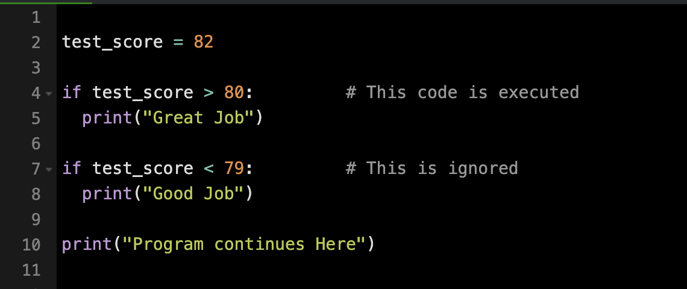
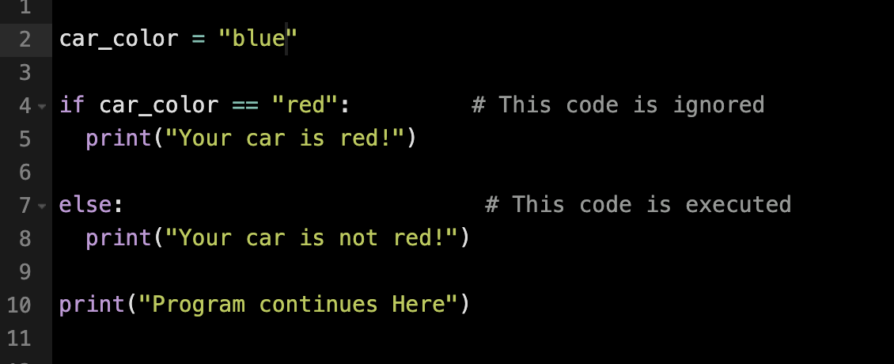
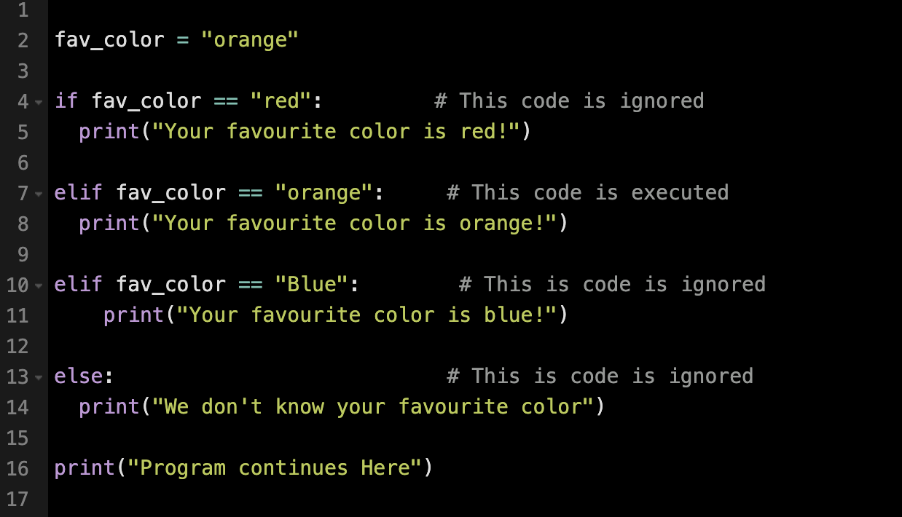

Conditionals evaluate an expression to determine whether it is True or False. If the expression is True, the program executes a specific action; if False, it can follow an alternative path.
As programs become more complex, conditionals help handle multiple scenarios, making them more flexible and dynamic.
In Python, the if statement controls the execution of code based on a Boolean expression.
Example:
The else statement in Python provides an alternative block of code to run when the condition in an if statement evaluates to False.
To properly structure the else block, its code must be indented, and any following statements should be aligned with the original if statement.
The elif statement in Python allows for additional conditions to be checked after an initial if statement.
Unlike else, which runs only when the if condition is False, elif includes its own expression to evaluate, similar to if.
You can use multiple elif statements to check different conditions. However, once an elif condition evaluates to True, any remaining elif statements are skipped.
